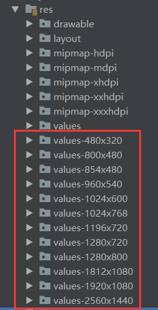
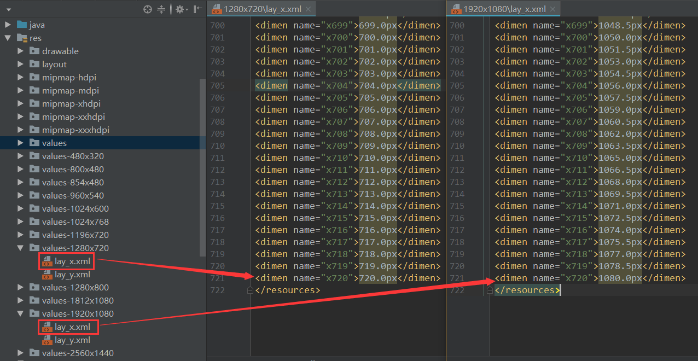
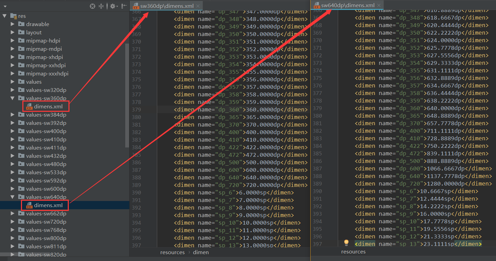
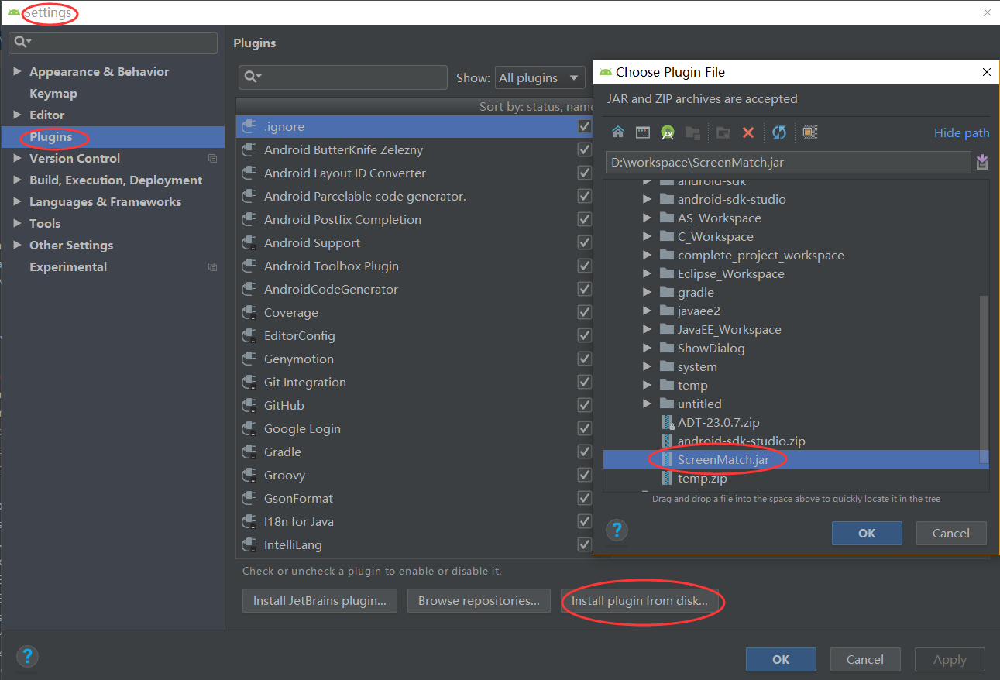
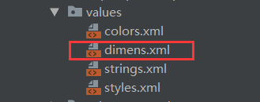
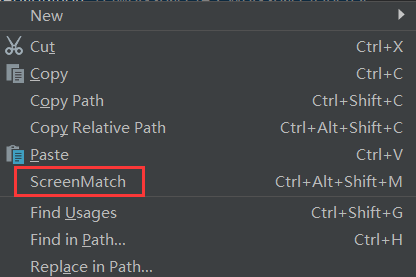
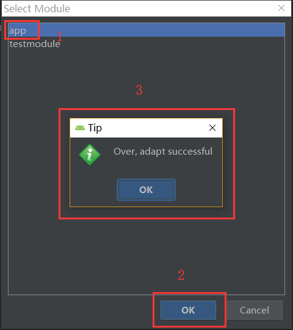
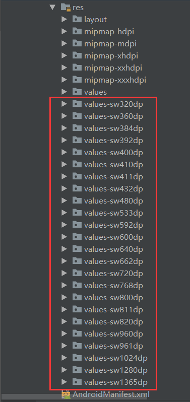
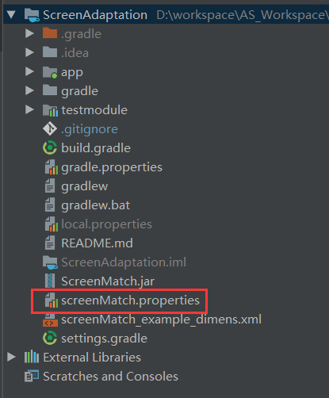
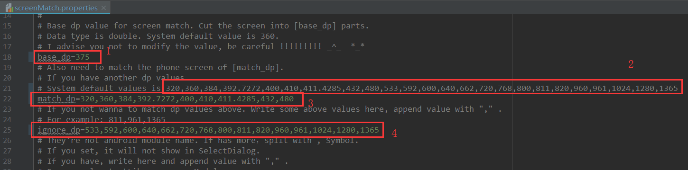

更新：由于该适配方案越来越多人使用，也有很多人遇到不太理解的问题。所以为了大家更好的使用，我将文章很多内容更新了，老用户可以重新看下整篇文章。主要更新的内容是使用方法跟以前不同了，以前是不改变最小宽度基准值，根据 UI 图来计算布局中设置的值。现在改成最小宽度基准值与设计图一致，然后设计图标注多少 dp 就写多少 dp，非常方便。还整理了评论区比较多人问到的问题作统一回答。
前言
网上关于屏幕适配的文章已经铺天盖地了，为什么我还要讲？因为网上现在基本都是使用 屏幕分辨率限定符 进行适配，即每种屏幕分辨率的设备需要定义一套 dimens.xml 文件。由于不同分辨率的设备太多了，而且有些设备还有虚拟按键（例如华为手机），这样就还需要每个有虚拟按键的设备加多一套 dimens.xml 文件，再加上平板那些你会发现 dimens.xml 文件所占的体积已经超过2M了！这绝对不是我们想要的。
我这里要讲的是使用 sw
一、为什么要进行屏幕适配？
关于为什么要进行屏幕适配，什么是 dp、dpi 这些概念我就不去一一讲解了，网上很多文章。这里我推荐几篇讲的比较好的：
二、屏幕分辨率限定符与 smallestWidth 限定符适配原理
2.1 屏幕分辨率限定符适配原理
屏幕分辨率限定符适配需要在 res 文件夹下创建各种屏幕分辨率对应的 values-xxx 文件夹，如下图：

然后根据一个基准分辨率，例如基准分辨率为 1280x720，将宽度分成 720 份，取值为 1px~720px，将高度分成 1280 份，取值为 1px~1280px，生成各种分辨率对应的 dimens.xml 文件。如下分别为分辨率 1280x720 与 1920x1080 所对应的横向dimens.xml 文件：

假设设计图上的一个控件的宽度为 720px，那么布局中就写 android:layout_width=”@dimen/x720” ，当运行程序的时候，系统会根据设备的分辨率去寻找对应的 dimens.xml 文件。例如运行在分辨率为 1280x720 的设备上，系统会自动找到对应的 values-1280x720 文件夹下的 lay_x.xml 文件，由上图可知 x720 对应的值为
720.px，可铺满该屏幕宽度。运行在分辨率为 1920x1080 的设备上，系统会自动找到对应的 values-1920x1080 文件夹下的 lay_x.xml 文件，由上图可知 x720 对应的值为 1080.0px，可铺满该屏幕宽度。这样就达到了屏幕适配的要求！
2.2 smallestWidth 限定符适配原理
smallestWidth 限定符适配原理与屏幕分辨率限定符适配原理一样，系统都是根据限定符去寻找对应的 dimens.xml 文件。例如程序运行在最小宽度为 360dp 的设备上，系统会自动找到对应的 values-sw360dp 文件夹下的 dimens.xml 文件。区别就在于屏幕分辨率限定符适配是拿 px 值等比例缩放，而 smallestWidth 限定符适配是拿 dp 值来等比缩放而已。需要注意的是“最小宽度”是不区分方向的，即无论是宽度还是高度，哪一边小就认为哪一边是“最小宽度”。如下分别为最小宽度为 360dp 与最小宽度为 640dp 所对应的 dimens.xml 文件：

- 获取设备最小宽度代码为：
ScreenUtils——>ScreenUtilsDisplayMetrics dm = new DisplayMetrics(); getWindowManager().getDefaultDisplay().getMetrics(dm); int heightPixels = ScreenUtils.getScreenHeight(this); int widthPixels = ScreenUtils.getScreenWidth(this); float density = dm.density; float heightDP = heightPixels / density; float widthDP = widthPixels / density; float smallestWidthDP; if(widthDP < heightDP) { smallestWidthDP = widthDP; }else { smallestWidthDP = heightDP; }
三、为什么选择 smallestWidth 限定符适配？
既然原理都一样，都需要多套 dimens.xml 文件，那为什么要选择 smallestWidth 限定符适配呢？
- 屏幕分辨率限定符适配是根据屏幕分辨率的，Android 设备分辨率一大堆，而且还要考虑虚拟键盘，这样就需要大量的 dimens.xml 文件。因为无论手机屏幕的像素多少，密度多少，90% 的手机的最小宽度都为 360dp，所以采用 smallestWidth 限定符适配只需要少量 dimens.xml 文件即可。
- 屏幕分辨率限定符适配采用的是 px 单位，而 smallestWidth 限定符适配采用的单位是 dp 和 sp，dp 和 sp 是google 推荐使用的计量单位。又由于很多应用要求字体大小随系统改变，所以字体单位使用 sp 也更灵活。
- 屏幕分辨率限定符适配需要设备分辨率与 values-xx 文件夹完全匹配才能达到适配，而 smallestWidth 限定符适配寻找 dimens.xml 文件的原理是从大往小找，例如设备的最小宽度为 360dp，就会先去找 values-360dp，发现没有则会向下找 values-320dp，如果还是没有才找默认的 values 下的 demens.xml 文件，所以即使没有完全匹配也能达到不错的适配效果。
四、使用步骤
4.1 以设计图最小宽度（单位为 dp）作为基准值，生成所有设备对应的 dimens.xml 文件
这些文件当然不会手动去写，网上已经有大神提供了自动生成这些文件的插件 ScreenMatch。但是这个插件还是有点问题的：
- 默认没有适配最小宽度为 320dp 的设备。其实自己测试还是有很多设备最小宽度是 320dp 的，所以需要加上。
- 最小宽度为 392.7272 与 411.4285 的手机不能达到完全适配。原因是该插件的默认值都是取整的，即 392.7272 与 411.4285 在插件中写的是 392 与 411。
基于以上问题，我在该插件的源码上优化生成了新的插件 ScreenMatch，由于插件库已经有原作者的插件了，所以我就不重复造轮子上传到插件库了，你直接用本地安装的方式安装即可。
工具使用步骤：
- 在 Android Studio 中安装 ScreenMatch 插件
下载插件 ScreenMatch 到本地，点击菜单栏上的 File -> Settings -> Plugins -> Install plugin from disk，然后选择我们刚刚下载的插件，最后点击 “OK”，重启 Andorid Studio 即可。如下图所示：

- 在项目的默认 values 文件夹中需要一份 dimens.xml 文件
我在 github 源码已经提供了一份，直接复制过来即可。

- 执行生成
插件安装好后，在项目的任意目录或文件上右键，选择 ScreenMatch 选项。如下图：

然后选择在哪个 module 下执行适配。即基于哪个 module 下的 res/values/dimens.xml 文件作为基准 dimens.xml 文件，生成的其他尺寸 dimens.xml 文件放在哪个 module 下。例如选择 app，然后点击 OK ，出现如下界面表示生成文件成功。如下图：

然后再看看 res 目录下会自动生成一堆 dimens.xml 文件，如下图：

通过上面的步骤就已经生成了所有设备对应的 dimens.xml 文件。
- 根据设计图填写最小宽度基准值，并填写需要适配的设备最小宽度 dp 值
步骤 3 是以插件默认的最小宽度基准值为 360dp，适配的设备最小宽度为
320,360,384,392.7272,400,410,411.4285,432,480,533,592,600,640,662,720,768,800,811,820,960,961,1024,1280,1365（包含了平板和 TV ）生成的文件，但实际情况要根据设计图和需求设置。
例如设计图的最小宽度为 375dp，则需要更改最小宽度基准值为 375dp。如果项目只需要适配手机的话，适配的设备最小宽度保留 320,360,384,392.7272,400,410,411.4285,432,480 即可，若发现手机还有其他最小宽度自行加上即可，也麻烦把该最小宽度提供给我，我们一起来完善该份适配。
以上修改需要在配置文件里修改，即 screenMatch.properties 文件，该配置文件是执行完上面第 3 步后自动生成在项目的跟目录下的。如下图：

打开配置文件，修改下图中 1、3、4 的值即可。(图中单位均为 dp)
1：最小宽度基准值，填写设计图的最小宽度值即可。
2：插件默认适配的最小宽度值，即默认情况下会生成如下值的 dimens.xml 文件。
3：需要适配的最小宽度值（如果是小数，则保留4位小数。例如 392.727272…，则取 392.7272），即你想生成哪些 dimens.xml 文件。
4：忽略不需要适配的最小宽度值，即忽略掉插件默认生成的 dimens.xml 文件。

配置文件修改完成后，重新执行第 3 步，生成新的 dimens.xml 文件。
当然！如果你的设计图也是标准的 360dp，那么上面的步骤你可以忽略。直接复制我 github 上你需要的 dimens.xml 文件到你的项目即可，默认的 values 文件夹下也需要一份。
4.2 根据设计图标注，在布局写上对应的值。
设计图标注多少 dp，布局中就写多少 dp ，非常方便！
- 大多数 UI 设计师提供设计图有如下几种方式：
上传到蓝湖：显示多少 dp 就写多少 dp。
psd 源文件：用像素大厨查看，显示多少 dp 就写多少 dp（注意像素大厨需要选择与设计图对应的dpi 进行显示）
dp 单位的设计图：标注多少 dp 就写多少 dp。
px 单位的设计图：叫 UI 设计师标注为 dp 单位或跟她要 psd 源文件，如果都不行，那自己算吧！
- 举例：例如设计图上一个Button 的宽为 360dp，高为 50dp，字体大小为 15 sp，在布局中则这样使用：
<Button
android:layout_width="@dimen/dp_360"
android:layout_height="@dimen/dp_50"
android:textSize="@dimen/sp_15"/>代码中动态设置 dp 或 sp：
如果需要在代码中动态设置 dp 或 sp，则需要通过 getDimension（）方法获取对应资源文件下的 dp 或 sp 值再设置（具体参考 github 上的 demo）。如下：/*获取sp值*/ float pxValue = getResources().getDimension(R.dimen.sp_15);//获取对应资源文件下的sp值 int spValue = ConvertUtils.px2sp(this, pxValue);//将px值转换成sp值 mTvShowParams.setTextSize(spValue);//设置文字大小 /*获取dp值*/ float pxValue2 = getResources().getDimension(R.dimen.dp_360);//获取对应资源文件下的dp值 int dpValue = ConvertUtils.px2dp(this, pxValue2);//将px值转换成dp值
4.3 使用步骤总结
说了这么多，其实只需要简单的 2 步：
- 以设计图最小宽度（单位为 dp）作为基准值，利用插件生成所有设备对应的 dimens.xml 文件
- 根据设计图标注，标注多少 dp，布局中就写多少dp，格式为@dimen/dp_XX。
五、怎么适配其他 module?
- 问题：在项目的其他 module 中怎么实现适配？难道也要多套 dimens 文件？
- 解决：并不需要多套 dimens 文件，只需要在 values 文件夹下有一套与 app module 一样的 dimens 文件即可达到适配。因为经过编译，所有 module 中的 dimen 数据都会统一归类到主 module（即 app module）中的 values/dimens.xml 文件中了，然后系统又会根据你设置的值去找对应 values-swxxxdp 文件夹下的dimens.xml 文件中的值。
- 验证：将我 github 上的 demo 分别运行在不同 widthDP 的设备上（用模拟器即可），然后观察显示的效果会发现确实是这样的。
六、常见问题汇总
6.1 为什么宽度适配了，高度有时候没有完全适配？
因为各种屏幕高宽比并不是固定的，有16:9、4:3，还有全面屏的19.5:9等等，如果强行将宽高都适配那只会导致布局变形。
例如一个控件的宽高为360dp和640dp，如果将它显示在宽高为360dp和640dp的设备上是正常铺满整个屏幕的，但是显示在宽高为360dp和780dp的设备上高度则不能铺满，如果你让高度铺满，而宽度又保持不变，那就会出现变形的情况。所以这也就是为什么目前市面上的屏幕适配方案只能以宽或高一个维度去适配，另一个方向用滑动或权重的方式去适配的原因。
那你为什么说高度也能适配呢？
这里说的高度也能适配指的是在不同分辨率和密度的手机上能达到等比缩放的适配，其他屏幕适配方案也是一样的。
6.2 如何同时适配横竖屏？
方案一：（不推荐）
计算出设备宽度和高度的dp值，然后生成对应的宽高 dimens.xml 文件。然后去掉所有 values-swXXXdp 目录上的s，即改为 values-wXXXdp。这样设备不管横竖屏都能找到对应的 values-wXXXdp 目录下的 dimens.xml 文件了。 虽然也能达到一定程度的适配，但是这样会增加很多 dimens.xml 文件，而且使用竖屏的设计图显示出来的效果也不够好。方案二：（推荐）
因为横屏时宽高变化太大，想要横屏时也能完全适配，那就只能让设计师出一套横屏的设计图，然后单独写一套横屏的布局文件。
注意：smallestWidth 限定符适配的效果是让不同分辨率和密度的设备上能达到以设计图等比缩放的适配，如果设备与设计图相差太大时并不能达到很好的适配效果，需要单独出图，其他屏幕适配方案也是一样的。
6.3 如何适配平板、TV？
同横屏道理一样，平板、TV 与手机的宽高差距太大，想要平板、TV 也能完全适配，那就只能让设计师出一套平板、TV 的设计图，然后单独写一套平板、TV 的布局文件。
注意：再说一遍，smallestWidth 限定符适配的效果是让不同分辨率和密度的设备上能达到以设计图等比缩放的适配，如果设备与设计图相差太大时并不能达到很好的适配效果，需要单独出图，其他屏幕适配方案也是一样的。
github 地址：ScreenAdaptation
参考资料：